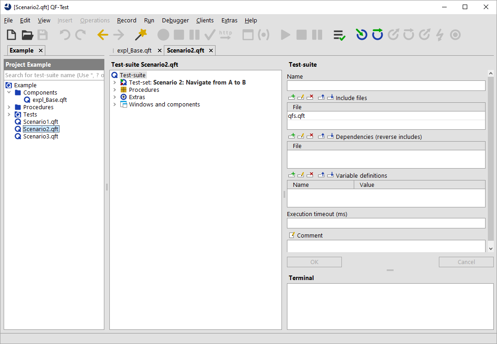

| Version 6.0.3 |
Projects provide a better overview, improve navigation between test-suites and expand the scope for search and replace operations. Also, QF-Test automatically manages dependencies resulting from includes or absolute references between test-suites that belong to the same project (see section 23.1). Many other features have already been implemented or are under development.
Technically a QF-Test project is a set of test-suites located in one or more directories with a common root. There is a 1:1 relation between the project and its directory and the name of the directory automatically becomes the name of the project.
To create a new project, select the menu item »File«-»New project...« and choose the directory. QF-Test then creates a file
called qftest.qpj in that directory which identifies it as a project. All
test-suites located below that directory, except those specified in the option Project files and directories to exclude automatically belong to this project. Please see subsection 37.1.1 for options affecting projects, including the exclusion list.
A sub-project is sub-directory of a project which is itself a project. Test-suites within a sub-project also belong to all outer projects containing the sub-project. The project of a test-suite is the innermost sub-project it belongs to. Automatic dependency resolution always covers the whole outermost project of a suite including all sub-projects.
|
|  | ||
|
| Figure 9.1: The project view | ||
The project view with one or more projects can be turned on or off via the menu item »View«-»Show projects«. The project tree shows the hierarchy of directories and test-suites starting from the project root, possibly limited by the filter at the top of the tree which matches on test-suite names. Double clicking a test-suite opens it, as does pressing the [Return] key. You can select several files or directories to be opened in one go, including all test-suites located below the selected directories.
The hierarchy is refreshed automatically at intervals defined in the option Project refresh interval (s). You can refresh a directory including its complete hierarchy at any time by selecting it and pressing [F5]. For a more thorough rescan that does not rely on modification times but may take significantly longer for large projects, press [Shift-F5] instead.
To switch keyboard focus back and forth between the test-suite and the project view, press [F6]. Via [Shift-F6] you can navigate to the node representing the current test-suite in the project tree. If necessary, project view and project are automatically shown.
| Last update: 9/6/2022 Copyright © 1999-2022 Quality First Software GmbH |